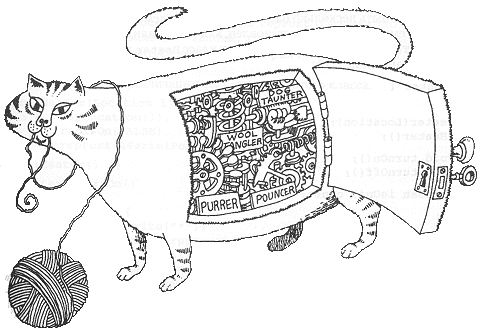

- Что такое абстракция и абстрагирование
- Зачем?
- Проблемы
- Выводы
Что такое абстракция и абстрагирование
Из философии: отвлечение в процессе познания от несущественных сторон, свойств, связей объекта (предмета или явления) с целью выделения их существенных, закономерных признаков; абстрагирование — теоретическое обобщение как результат такого отвлечения.
Зачем?
Впихнуть невпихуемое.

Память

- Кратковременная
- Долговременная

TTL объекта = ~20 сек.
Оперативно (в кратковременной памяти) человек может оперировать малым числом объектов:
- 7±2 объектами (George Miller, 1989)
- 4±1 (Cowan, 2001)
- Число зависит от объектов
Группировка (Chunking)
88003334434
8-800-333-44-34
Вернёмся к абстрагированию
Абстрагировать можно алгоритмы и данные. Объект — их сочетание.
Архитектуру изобретают для того, чтобы совладать с неподъёмно сложными системами.
Обычно систему бьют на слои (группы, chunk-и). Каждый последующий более абстрактный слой базируется на предыдущем менее абстрактном.
Так можно уместить в голове общую картину разом.
Проблемы
Барьер абстракции
Два разных объекта могут при абстрагировании стать в определённом контексте неразличимы.

"All non-trivial abstractions, to some degree, are leaky." Joel Spolski
Практически все абстракции "дырявые". Через них просачиваются детали реализации.
Чтобы полностью понять абстракцию приходится зарыться в детали реализации.
Придётся вникнуть во всё. Начиная с совсем абстрактного и заканчивая почти конкретным.
Проще вникать в простое и конкретное.
Побочный эффект
У абстракции есть свойства, которых нет в объекте.
OOD, DDD и т.д.
- Цель — подобрать подходящую абстракцию
- Важен контекст
Плохая абстракция хуже отсутствия абстракции.
Абстракция (класс) зависит от того, кто абстрагирует. Для одной задачи два человека получат разный набор классов.
Своя абстракция всегда более понятна. Отсюда желание всё переписать.
Все хотят писать реюзабельный код, но никто не хочет реюзать чужой код.
Смена контекста
При изменении контекста абстракция может перестать работать.

Практически невозможно оценить архитектуру, не развивая в течение существенного времени приложение, на ней построенное.
Совсем сходу не оценить?
Оценить техническое исполнение абстрагирования возможно:
- Coupling
- Cohesion
- SOLID
- и т.д.
Одинаковая подготовка делает различия меньше, а понимание лучше.
Именно поэтому надо читать и знать Буча, Фаулера и т.д.
Абстракция — не цель, а инструмент.
Почитать
- Wikipedia: Abstraction
- Wikipedia: Short-term memory
- Barbara Oakley: A Mind For Numbers (Думай как математик)
- Why Every Single Element of SOLID is Wrong!
- Сергей Тепляков
- Гради Буч, Объектно-ориентированный анализ и проектирование